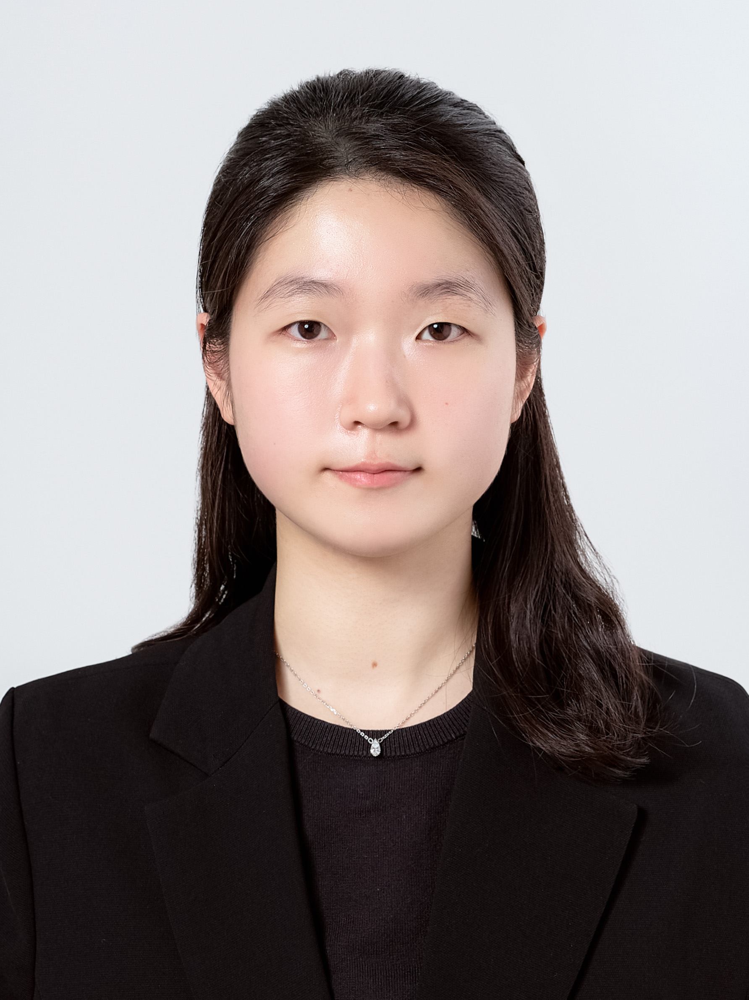

Integrated M.S.-Ph.D. Student, Graduate School of AI, UNIST
Welcome to my website! As a first year student in the integrated M.S.-Ph.D. program at UNIST's Graduate School of Artificial Intelligence. I am fortunate to be part of the AGA Lab, where I work under the supervision of Prof. Sangwoong Yoon. My research interests include Generative Modeling and AI4Science, particularly 3D molecule generation problem. Looking forward to sharing this journey with you 😊
